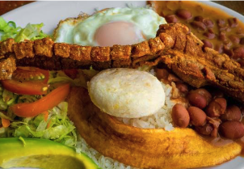

Este plato es un ícono de Antioquia. Se originó en la época de los arrieros. Ellos necesitaban suplir el gasto calórico de largas travesías. La bandeja paisa es un ejemplo perfecto. Está compuesta por arroz, fríjol, chicharrón, carne molida, chorizo, morcilla, huevo y tajada de plátano frito. También incluye ensalada y aguacate. Suele acompañarse con mazamorra y bocadillo o panela. Aunque puede variar según el lugar, en Antioquia es abundante. La comida no solo es variada, sino también generosa en cantidad. La bandeja paisa demuestra esta abundancia.
